Four daylight angles, eight night clips. Three frames per clip (start, middle, end) because several of them pan. Green outline is my suggested match, but every night option is shown so you can override.
Note: an angle can take more than one night shot — the elevated angle has three usable options, the wide yard has three. Only the bar is limited to one.
Wide yard — tents left, LED screen right
4888 is the closest framing: same tents, same bench rows, festoons lit. 4896 is the ultra-wide version of nearly the same view, 4889 sits a step further back.
Before — daylight
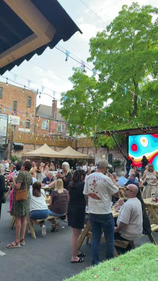
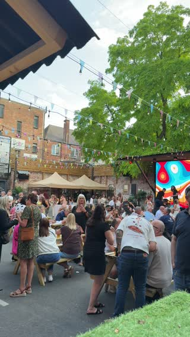
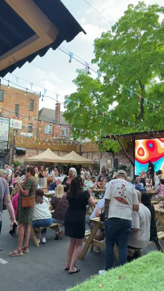
18.43 wide yard tents crowd and screen (4834 · 8.2s)
After — suggested night match (in order of fit)
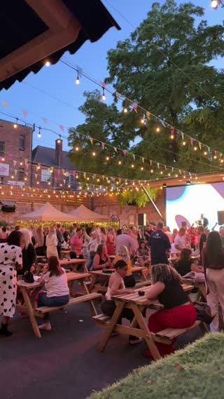
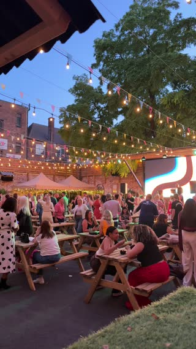
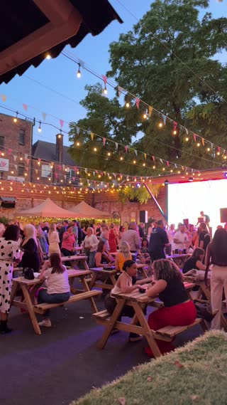
20.33 dusk wide benches under festoon canopy (4888 · 9.3s)
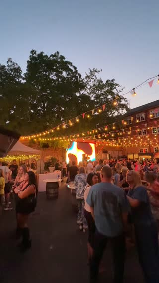
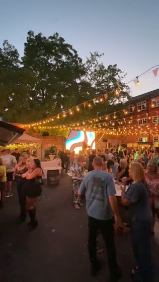
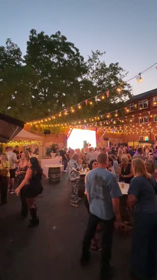
20.36 dusk festoon canopy glowing led screen (4896 · 10.1s)
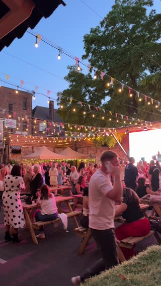
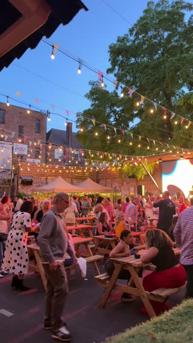
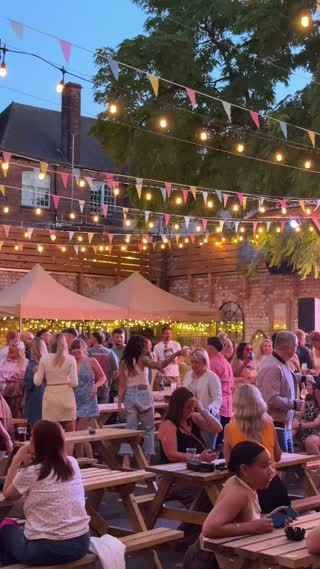
20.33 dusk crowd mingling under festoon lights (4889 · 19.9s)
Other night clips available
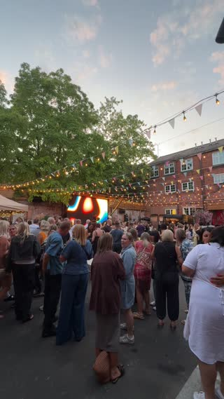
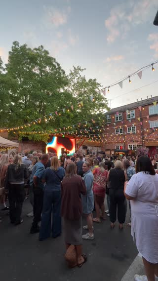
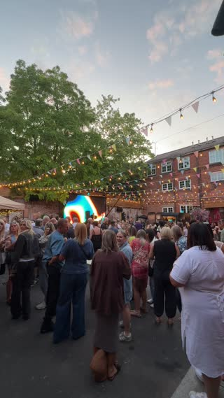
20.05 dusk crowd facing led screen (4853 · 3.7s)
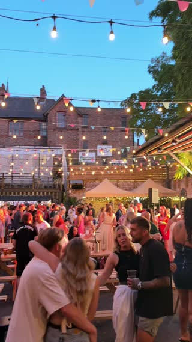
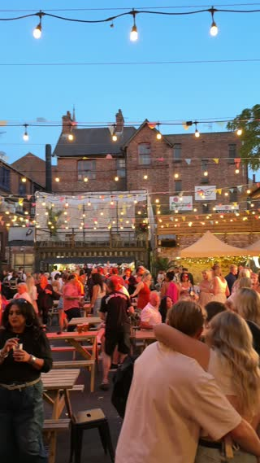
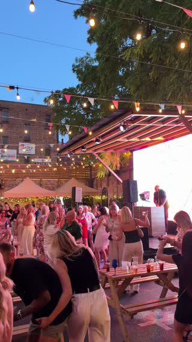
20.34 friends hugging in dusk crowd (4892 · 9.8s)
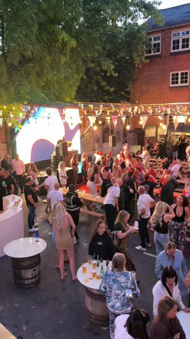
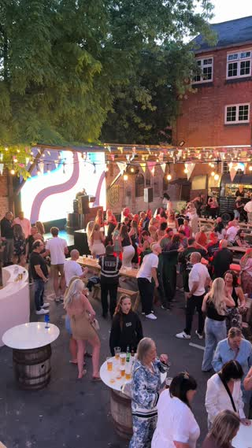
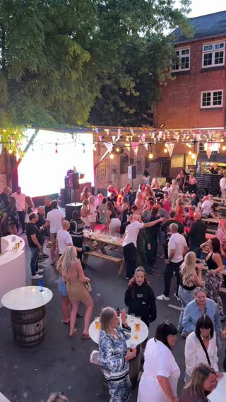
20.36 balcony view over yard and screen (4897 · 4.7s)
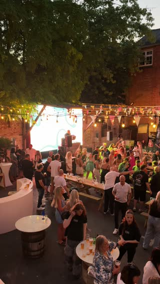
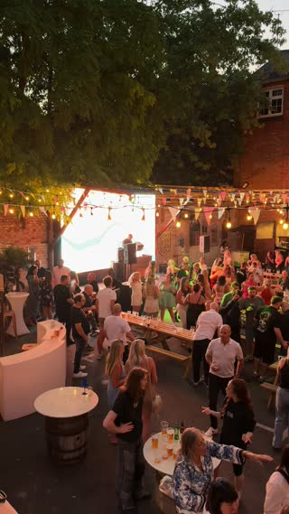
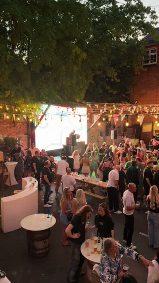
20.36 balcony view crowd at long benches (4898 · 5.3s)
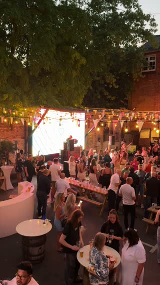
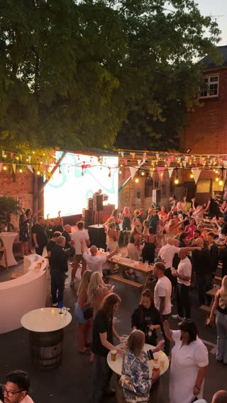
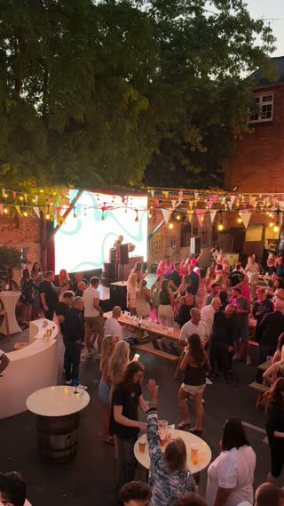
20.37 high view crowd under glowing screen (4899 · 12.8s)
Ultra-wide under the tree — heart screen
Both 4837 and 4853 are shot on the 13mm ultra-wide, so the field of view actually matches. 4896 is the other ultra-wide night option.
Before — daylight
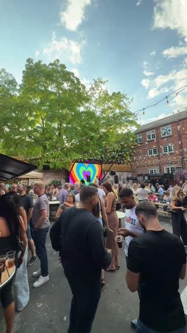
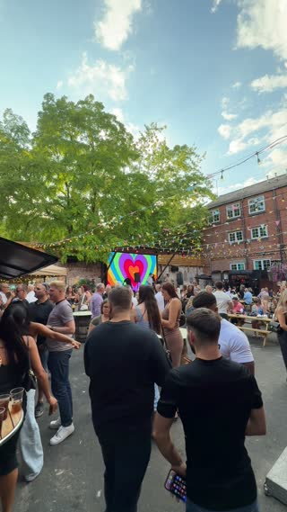
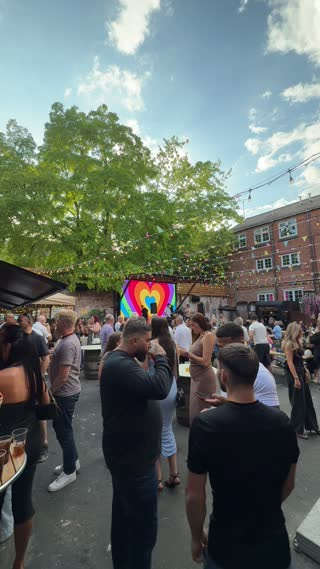
18.44 crowd with pints rainbow heart screen (4837 · 6.7s)
After — suggested night match (in order of fit)
20.05 dusk crowd facing led screen (4853 · 3.7s)
20.36 dusk festoon canopy glowing led screen (4896 · 10.1s)
Other night clips available
20.33 dusk wide benches under festoon canopy (4888 · 9.3s)20.33 dusk crowd mingling under festoon lights (4889 · 19.9s)20.34 friends hugging in dusk crowd (4892 · 9.8s)20.36 balcony view over yard and screen (4897 · 4.7s)20.36 balcony view crowd at long benches (4898 · 5.3s)20.37 high view crowd under glowing screen (4899 · 12.8s)
Elevated — over the benches toward the stage
All three night options are shot from the same raised position. 4897 holds the stage top-left like the daylight one, 4899 is wider on the crowd, 4898 sits lower on the long benches.
Before — daylight
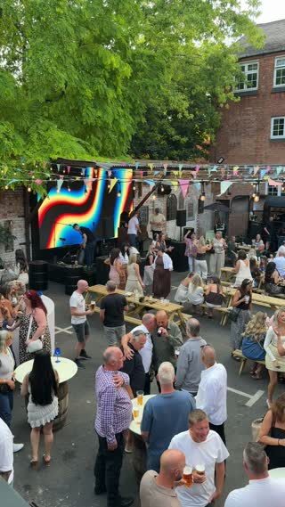
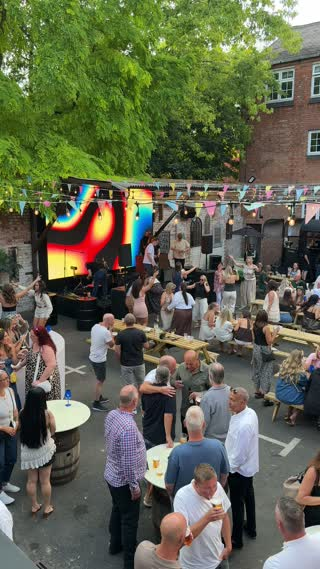
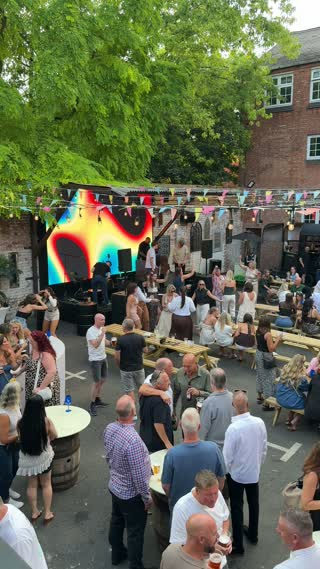
18.45 high wide of stage and benches (4838 · 7.8s)
After — suggested night match (in order of fit)
20.36 balcony view over yard and screen (4897 · 4.7s)
20.37 high view crowd under glowing screen (4899 · 12.8s)
20.36 balcony view crowd at long benches (4898 · 5.3s)
Other night clips available
20.05 dusk crowd facing led screen (4853 · 3.7s)20.33 dusk wide benches under festoon canopy (4888 · 9.3s)20.33 dusk crowd mingling under festoon lights (4889 · 19.9s)20.34 friends hugging in dusk crowd (4892 · 9.8s)20.36 dusk festoon canopy glowing led screen (4896 · 10.1s)
The bar — container bar with balcony above
Only 4892 has the container bar and balcony in frame at night, and it is from the yard rather than straight-on. This is the loose one, flagged.
Before — daylight
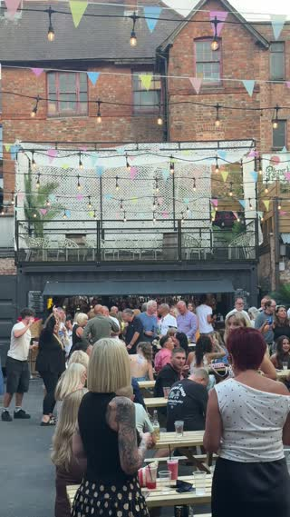
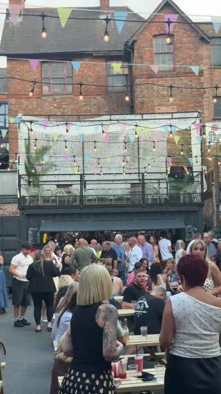
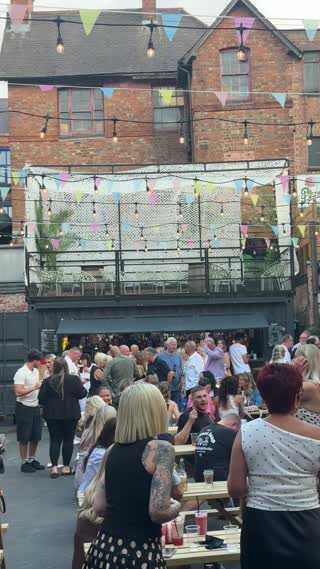
19.10 wide of crowd and balcony bar (4852 · 5.9s)
After — suggested night match
20.34 friends hugging in dusk crowd (4892 · 9.8s)
Other night clips available
20.05 dusk crowd facing led screen (4853 · 3.7s)20.33 dusk wide benches under festoon canopy (4888 · 9.3s)20.33 dusk crowd mingling under festoon lights (4889 · 19.9s)20.36 dusk festoon canopy glowing led screen (4896 · 10.1s)20.36 balcony view over yard and screen (4897 · 4.7s)20.36 balcony view crowd at long benches (4898 · 5.3s)20.37 high view crowd under glowing screen (4899 · 12.8s)